Storage
-
トール型下足入
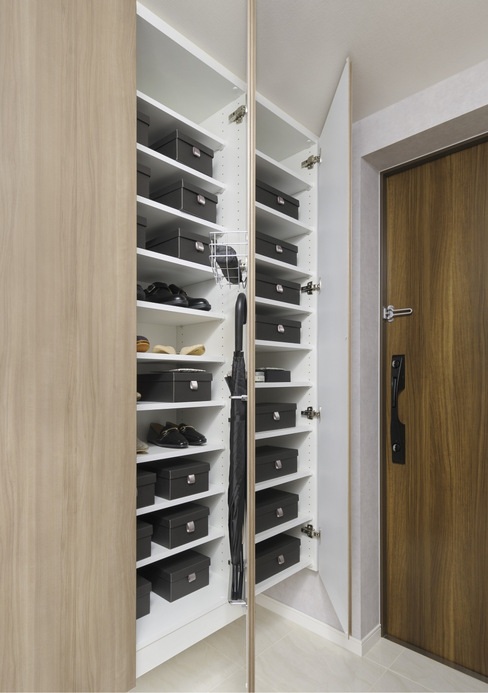玄関には、天井近くまでの高さがあるトール型の下足入を設けました。靴類はもちろん、背丈のあるブーツや傘まで、すっきりと収納できます。
※3～40階：A-3、A-2、F-3、F-2、J-3、J-2、N-3、N-2、O-2、O’-2、P-2、P’-2タイプは除く。
※41階：DA-3、DB-3、DC-3、DF-2、DJ-3タイプのみ。 -
システム収納
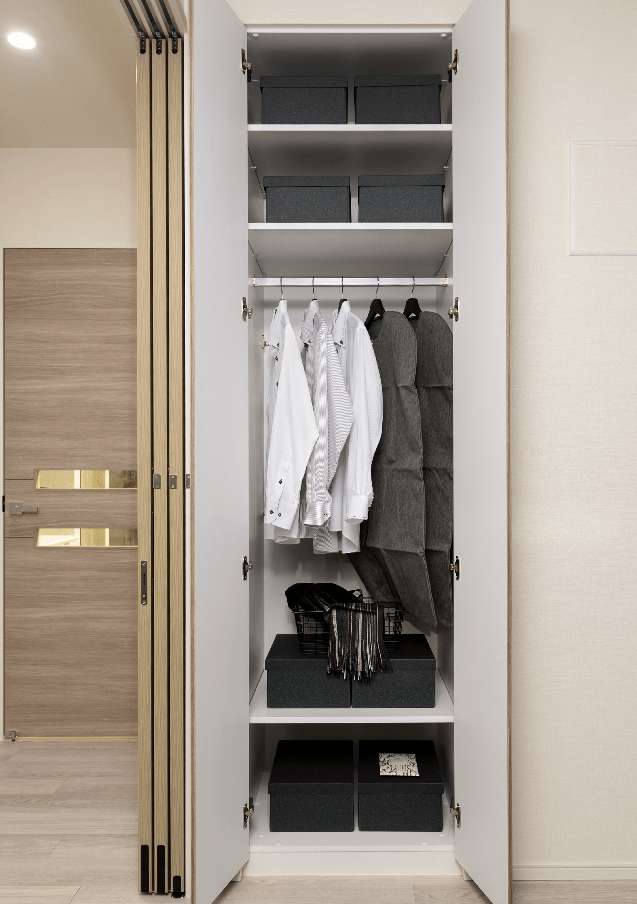クロゼットは、お使いになる方の好みやライフスタイル、部屋の用途に応じてパーツをオプション（有償）で加えることのできるシステム収納を採用しました。
-
ウォークインクロゼット
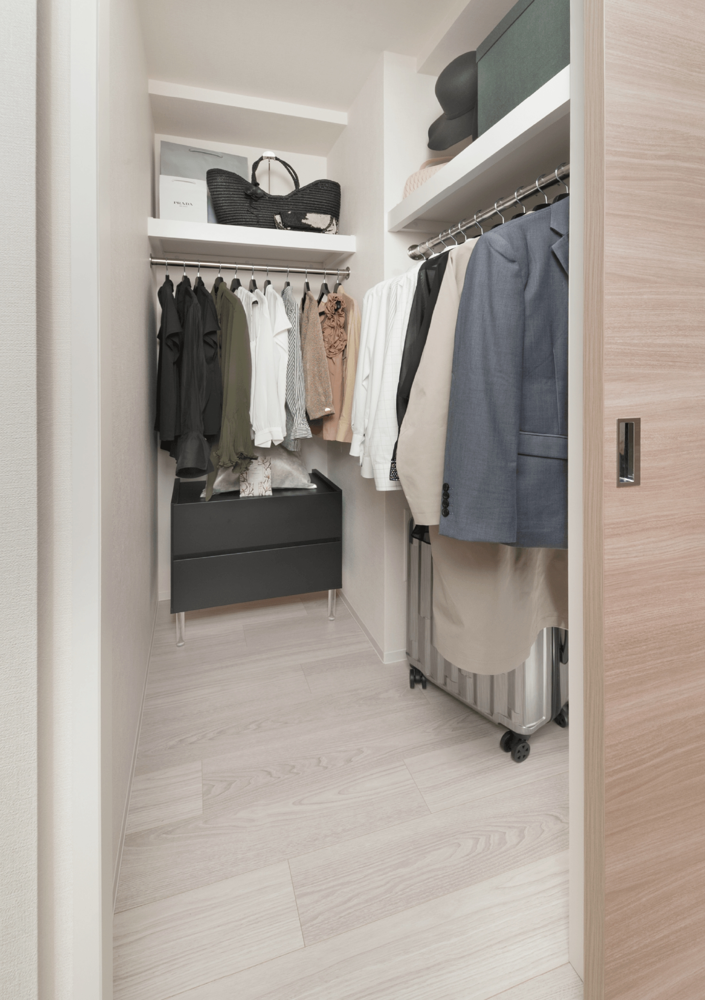ひと目で収納物を確認できるウォークインクロゼットは、ゆとりの広さを備えた大型収納。数多くの衣類に加え、足元には引出しや衣装箱、シューズボックスなども収納することができます。
-
納戸
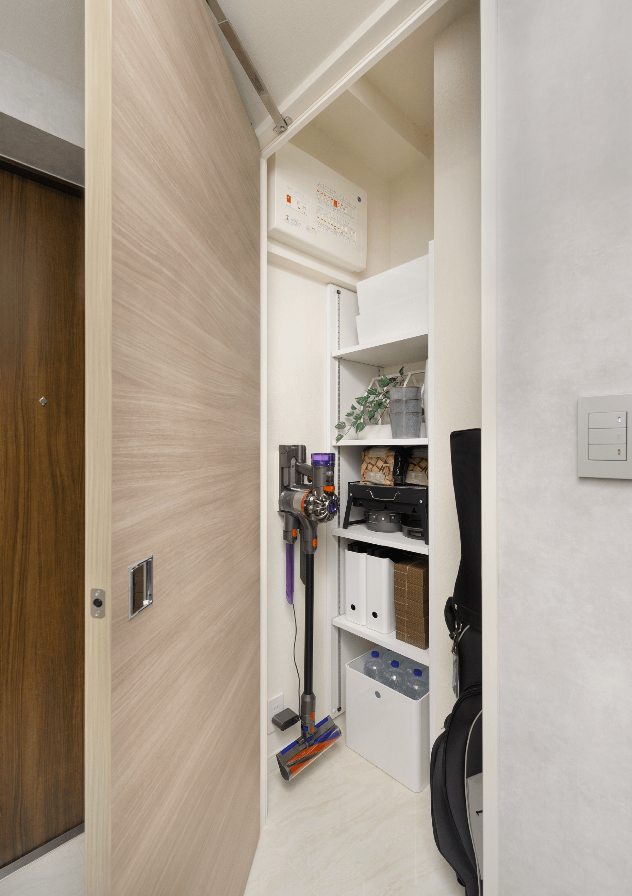ゴルフバッグやスーツケースなどのスポーツ・アウトドア用品から、季節物の生活用品まで、収納できる納戸をご用意しました。
※上部には分電盤などを設置しています。 -
シューズインクロゼット
靴を履いたまま出入りできる大型のシューズインクロゼットを設けました。靴類だけで なく、かさばる物も収納できます。
※一部住戸は上部にHUBなどを設置しています。
※3～40階：A-3、A-2、F-3、F-2、J-3、J-2、N-3、N-2、O-2、O’-2、P-2、P’-2タイプのみ。
※41階：DB-3、DC-3、DF-2タイプは除く。
Universal Design
-
フラットフロア
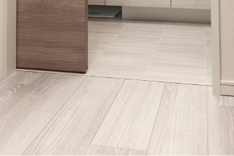つまずいて転倒するなど住戸内での思わぬ事故を防ぐために、住戸内の床段差を極力なくしたフラットフロアを実現しました。
※玄関、バスルーム、バルコニーの出入口を除く。 -
低床型ユニットバス
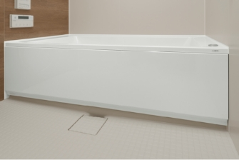浴槽へのまたぎ高を約450㎜に抑え、出入口の段差も極力解消した、低床設計のユニットバスを採用しました。さらに、壁には手すりを設置した、人にやさしい仕様です。
-
ハンズフリーキー
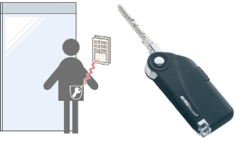主なオートロックドアには、鍵をカバンやポケットに入れたままで解錠可能な、ハンズフリーキーを採用。
※周辺通行時の意図しない解錠・誤作動防止のため、設置箇所により認証方法・検知範囲が異なります。また、検知範囲には限度があり、構造上、動線がカバーされていない箇所もあります。
-
手すり／手すり取付下地補強
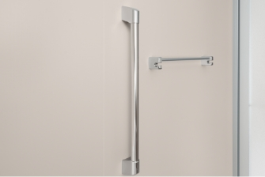バスルームには手すり、玄関や廊下、トイレには手すり取付下地補強を施しています。
※手すり取付下地補強は一部分のみ。 -
プッシュプルドアハンドル
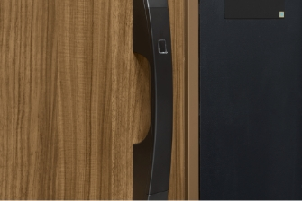ドアハンドルを回す必要がなく「押す・引く」だけで開閉できる、プッシュプル式のドアハンドルを採用しています。
-
車椅子利用者対応
エレベーター車椅子などでの利用に配慮して、正面壁面は鏡貼りとし、エレベーター内に手摺を設置。また、カゴ内と乗場の低い位置に車椅子専用ボタンを設けています。
Comfort
-
ダブルオープンフレキシブルプラン
リビング・ダイニングと隣接する洋室を可動式間仕切り扉で開放的な一体空間にもプライバシーの保たれた個室にも変更可能なダブルオープンフレキシブルプランを採用しました。リビング・ダイニングとの一体感を高めるため、主開口側であるサッシュ面に余計な袖壁を作らない従来の設計に加え、主開口とは反対側からも単独で開くことができる扉を採用することで洋室のプライベート性や家具レイアウトの自由度が大きくアップしました。ライフスタイルの変化にリフォームすることなく自在に対応できます。
※O-2、O’-2、P-2、P’-2タイプの洋室（2）は除く。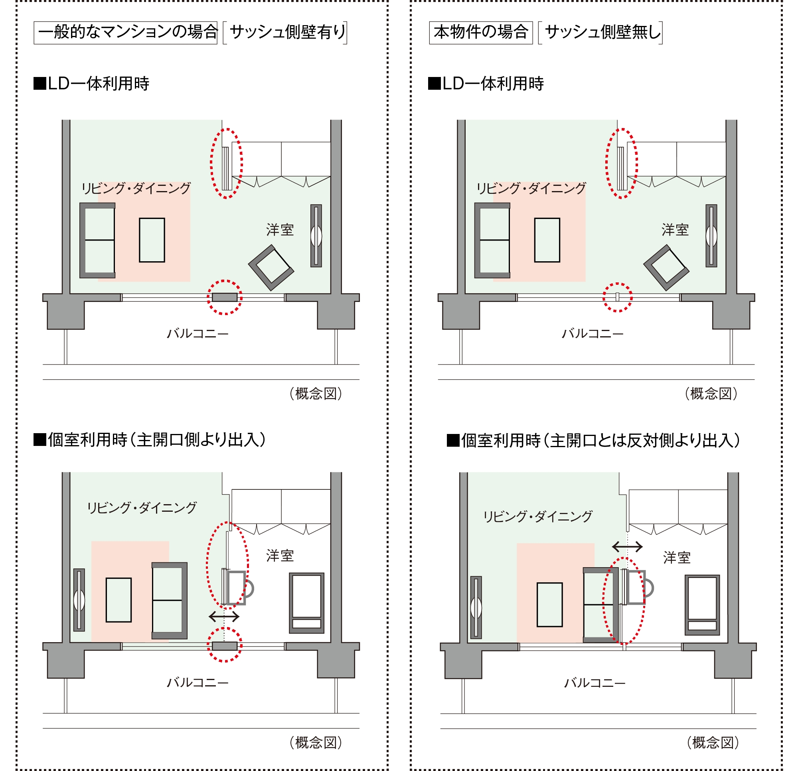
-
最大約2,600mmの天井高
（リビング・ダイニング、洋室／3階～40階）
（41階は最大約2,850mmの天井高）天井高最大約2,600mmを確保しました。天井を高くすることにより、同じ面積でも、空間の広がりが感じられるよう配慮した、開放感あふれる設計です。
※天井の高さは予定であり、施工上多少の差異があります。
※一部住戸除く
詳細は図面集をご確認ください。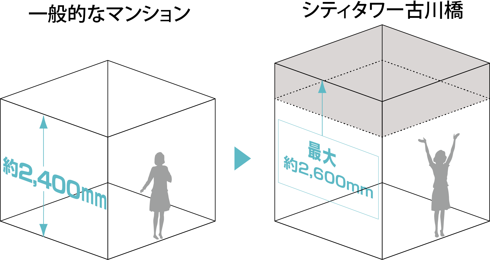（概念図）
-
アウトフレーム設計
躯体柱をリビング・ダイニング、洋室の外に出したアウトフレーム設計を採用しました。家具のレイアウトなどスペースが有効活用できます。
※室内の壁の形状は概念図上では一部省略しています。詳細は図面集をご確認ください。
※主開口部側のみ。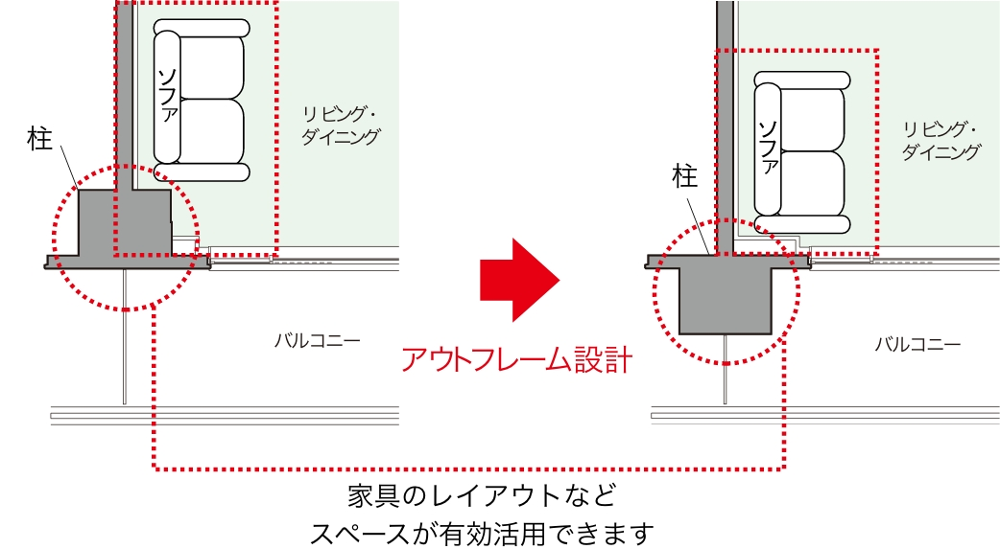 -
無線LAN機能付きエネファームリモコン
専用アプリケーションを使ってお手元のスマートフォンから給湯器・浴室乾燥機・床暖房などの操作や機器の状態をどこからでも確認することができます。※1帰宅途中にスマートフォンからお湯はり・追い焚きをしておけば、帰ってすぐお風呂に入れます。また、寒い冬の日は床暖房を運転ONにしておけば、家に帰るころにはお部屋あたたか。
※1.ご利用には予め準備が必要な事項もございます。詳細につきましては取扱説明書をご確認ください。
※2.家庭用無線LANルーターは別途ご用意頂く必要がございます。
※3.機器ごとによって仕様・接続方法が異なりますので、詳細につきましては取扱説明書をご確認ください。外出先からのガス機器操作外出先からお湯はりや追いだき、床暖房、浴室暖房乾燥機の遠隔操作ができるので、家に帰るとぽかぽかのお部屋とおふろが待っています。
※追いだき機能は、2020年度以降に発売された一部の給湯暖房機・エネファームと対応ツナガルde機能付リモコンの組合せ時に使用可能です。 ※床暖房の遠隔操作は、2001年9月以降発売のインテリジェント通信対応の床暖房リモコンに対応しています。なお、一部の床暖房リモコンではスマートフォンからの遠隔操作や状態確認ができない場合があります。 ※浴室暖房乾燥機の遠隔操作（ON/OFF操作・運転状態の確認・運転終了通知・詳細設定＊）は、2021年10月以降に発売された浴室暖房乾燥機と2020年4月以降に発売された一部の熱源機（給湯暖房機やエネファーム）と対応するツナガルde機能付リモコンの組み合わせ時のみ操作可能です。＊詳細設定は2022年4月以降に発売された一部の熱源機（給湯暖房機やエネファーム）と対応するツナガルde機能付リモコンの組み合わせ時のみ操作可能です。 ※スマートフォンの画面は表示例です。 ※宅外から遠隔操作をする場合、操作がガス機器に反映されるまで時間がかかる場合があります。 ※既設の給湯器へエネファームを後付け設置される場合、遠隔操作はご利用いただけません。 ※詳しくは大阪ガスへお問い合わせください。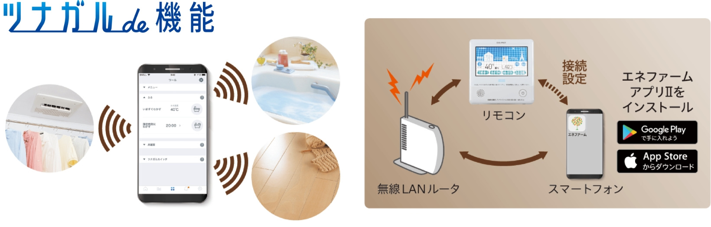 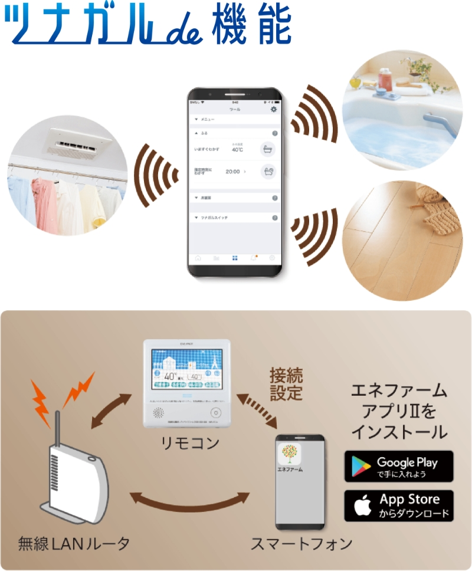
-
中空スラブ工法
住戸の主な床スラブは中空スラブ工法を採用しました。天井に梁の出張りが少ない住空間となります。
※住戸境には梁の出張りがあります。
※中空スペースの形状は場所により異なります。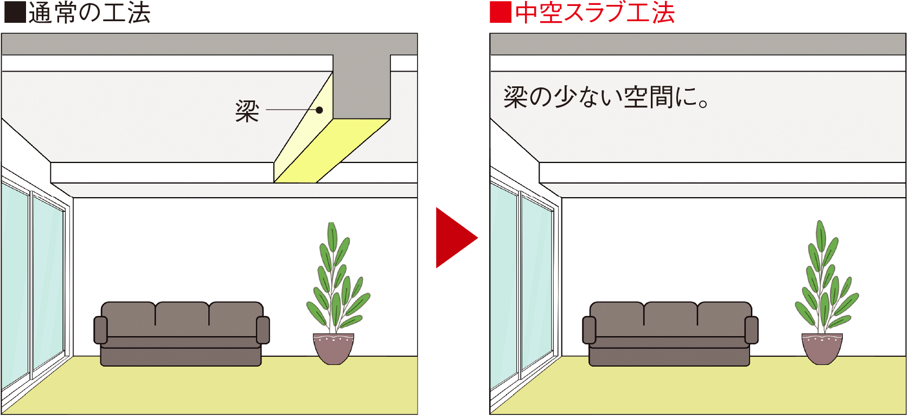（概念図）
-
同時給排気型レンジフード
キッチンのレンジフードは、排気と連動して給気を行うことができる同時給排気型を採用。効果的に給排気を行っています。
※41階住戸タイプのみ。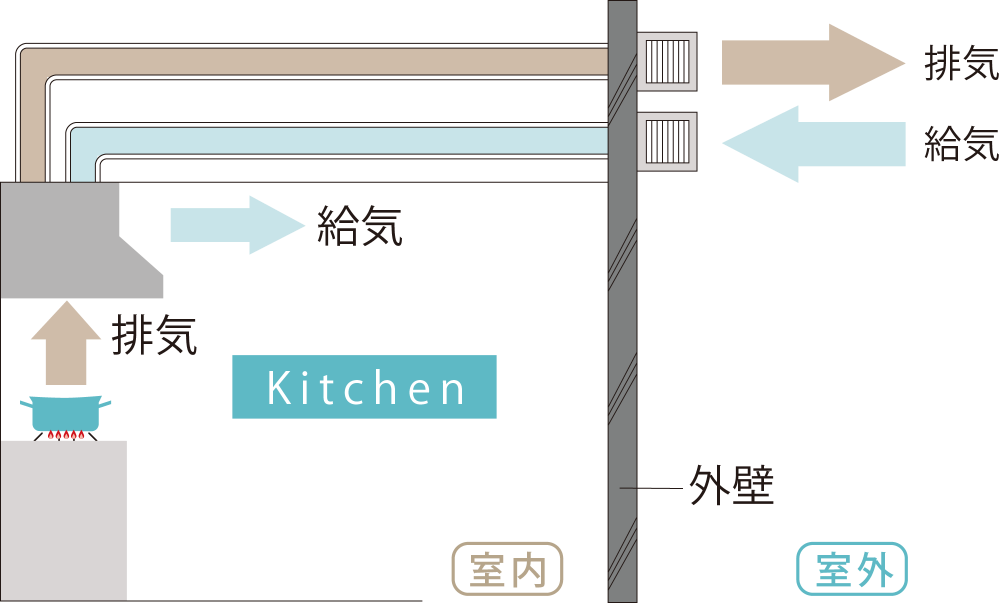（概念図）
-
各階ゴミ置場
各階フロアにゴミ置場（粗大ゴミを除く）を設けています。お住まいのフロアで24時間ゴミ出しができるので大変便利です。
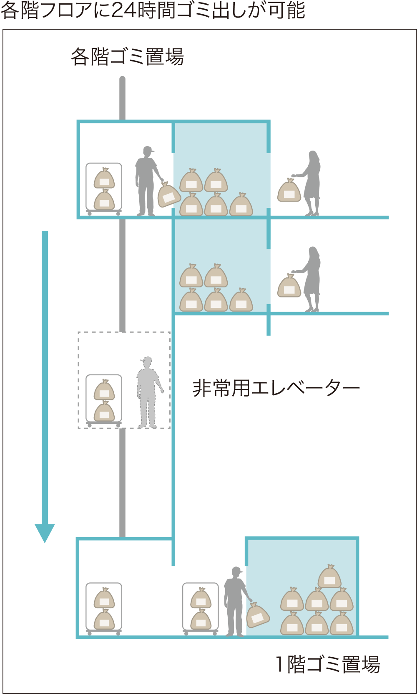（概念図）
-
-
天井カセット型エアコン
リビング・ダイニングには、埋込型の天井カセット型エアコンを標準装備しています。
※41F住戸タイプのみ。 -
二重床・二重天井
住戸内を二重床・二重天井とすることで、配管・配線のコンクリートスラブへの打込みを減らし、将来のリフォームやメンテナンスへの対応に配慮しています。
※玄関、シューズインクロゼット、パイプスペース、バスルーム、3～40階住戸の床（直床）を除く -
ペット足洗い場
散歩で汚れたペットの足を清潔に保つペット専用の足洗い場を設けました。
-
※掲載の写真はモデルルーム（I-2タイプ）を撮影（2024年12月）したもので、家具・調度品等オプション仕様は販売価格に含まれておりません。
※設備・仕様はタイプにより異なります。